This document discusses the finite-element-based solution of the Young Laplace equation, a nonlinear PDE that determines the static equilibrium shapes of droplets or bubbles. We start by reviewing the relevant theory and then present the solution of a simple model problem.
Theory
The figure below illustrates a representative problem: A small droplet is extruded slowly from the outlet of a cylindrical tube. The air-liquid interface is pinned at the end of the tube. We assume that the size of the droplet and the rate of extrusion are so small that gravitational, viscous and inertial forces may be neglected compared to the interfacial forces acting at the air-liquid interface.

The shape of the air-liquid interface (the meniscus) is then determined by Laplace's law which expresses the balance between the (spatially constant) pressure drop across the meniscus, 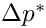, and the surface tension forces acting at the air-liquid interface,
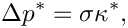
where  is the mean curvature and
is the mean curvature and  the surface tension.
the surface tension.
Non-dimensionalising all lengths on some problem-specific lengthscale  (e.g. the radius of the cylindrical tube) and scaling the pressure on the associated capillary scale, 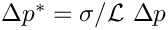, yields the non-dimensional form of the Young-Laplace equation
(e.g. the radius of the cylindrical tube) and scaling the pressure on the associated capillary scale, 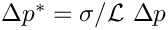, yields the non-dimensional form of the Young-Laplace equation
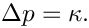
This must be augmented by suitable boundary conditions, to be applied at the contact line – the line along which the meniscus meets the solid surface. We can either "pin" the position of the contact line (as in the above example), or prescribe the
contact angle at which the air-liquid interface meets the solid surface.
The mathematical problem may be interpreted as follows: Given the prescribed pressure drop 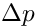 (and thus  ), we wish to determine an interface shape of the required mean curvature that satisfies the boundary conditions along the contact line.
), we wish to determine an interface shape of the required mean curvature that satisfies the boundary conditions along the contact line.
Cartesian PDE-based formulation
Expressing the (non-dimensional) height of the interface above the 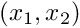-plane as 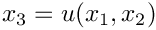 yields the cartesian form of the Young-Laplace equation:
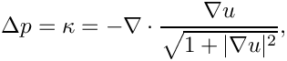
where 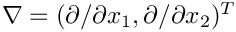 Given the imposed pressure drop across the interface, this equation must be solved for  . Note that this is only possible if the interface can be projected onto the -plane.
. Note that this is only possible if the interface can be projected onto the -plane.
The principle of virtual displacements
The interface shape can also be determined from the principle of virtual displacements
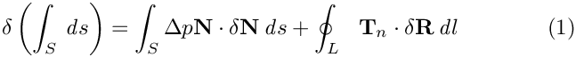
which may be derived from energetic considerations. Here the symbol 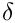 denotes a variation,  is the position vector to the interface, and the vector is the unit normal to the meniscus. The left hand side of this equation represents the variation of the interfacial energy during a virtual displacement, and 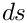 is an infinitesimal element of the meniscus surface,
is the position vector to the interface, and the vector is the unit normal to the meniscus. The left hand side of this equation represents the variation of the interfacial energy during a virtual displacement, and 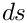 is an infinitesimal element of the meniscus surface,  . The terms on the right hand side represent the virtual work done by the pressure and the virtual work done by the surface tension forces acting at the free contact line, respectively. 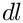 is the length of an element of the contact line
. The terms on the right hand side represent the virtual work done by the pressure and the virtual work done by the surface tension forces acting at the free contact line, respectively. 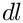 is the length of an element of the contact line  , and
, and  is the vector tangent to the interface and normal to the contact line. Note that, if the contact line is pinned, the variation of its position is zero, 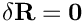, and the line integral vanishes.
is the vector tangent to the interface and normal to the contact line. Note that, if the contact line is pinned, the variation of its position is zero, 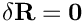, and the line integral vanishes.
The variational formulation of the problem is particularly convenient for a finite-element-based solution; see, e.g. the Solid Mechanics Theory document for a discussion of how to discretise variational principles with finite elements. The variational and PDE-based formulations are, of course, related to each other: The Young-Laplace equation is the Euler-Lagrange equation of the variational principle.
Parametric representation
To deal with cases in which the interface cannot be projected onto the -plane, we parametrise the meniscus by two intrinsic coordinates as 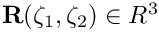, where 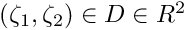. Furthermore, we parametrise the domain boundary,  , by a scalar coordinate 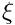 so that,
, by a scalar coordinate 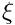 so that,
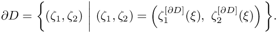
The normal to the meniscus is then given by
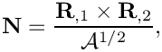
where the commas denote partial differentiation with respect to the intrinsic coordinates, and 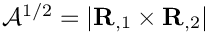 is the square root of the surface metric tensor.
The area and length differentials required in variational principle are
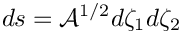
and
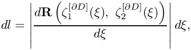
allowing us to write the principle of virtual displacements as
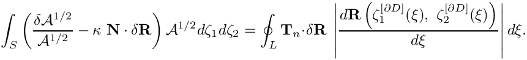
The method of spines
In the current form, the variational principle cannot yield a unique solution because there are infinitely many vector fields 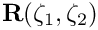 that parametrise the same interface shape. To remove this ambiguity, and to allow for interface shapes that cannot be projected onto the 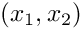-plane, we employ the so-called "Method of Spines". This method was originally proposed by Kistler and Scriven for the computation of free surface flows. We decompose the vector  into two parts by writing it as
into two parts by writing it as
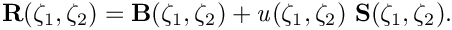
Here the "spine basis" 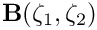 and the "spines" 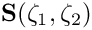 are pre-determined vector fields that must be chosen by the user. Using this decomposition, the meniscus shape is determined by the scalar function 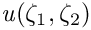 which represents the meniscus' displacement along the spines  .
.
The idea is illustrated in the simple 2D sketch below: the spine basis vectors, 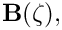 parametrise the straight line corresponding to a flat meniscus. Positive values of  displace the meniscus along the spines, 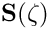 (the red vectors), whose orientation allows the representation of meniscus shapes that cannot be represented in cartesian form as 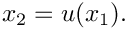
displace the meniscus along the spines, 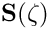 (the red vectors), whose orientation allows the representation of meniscus shapes that cannot be represented in cartesian form as 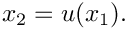
The spine basis and the spines themselves must be chosen such that the mapping from 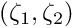 to 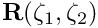 is one-to-one, at least for the meniscus shapes of interest. Pinned boundary conditions of the form 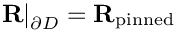 are most easily imposed by choosing the spine basis such that 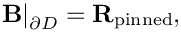 implying that 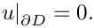
The simplest possible choice for the spines and spine basis is one that returns the problem to its original cartesian formulation. This is achieved by setting 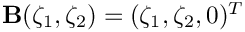 and 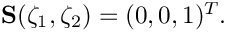
Displacement Control
The Young-Laplace equation is a highly nonlinear PDE. We therefore require a good initial guess for the solution in order to ensure the convergence of the Newton iteration. In many cases good initial guesses can be provided by a simple, physically motivated continuation method. For instance in the model problem shown above, the computation was started by computing the solution for 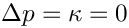 – a flat interface. This solution was then used as the initial guess for the solution at a small positive value of . This process was continued, allowing us to compute strongly deformed meniscus shapes. This method works well, provided small increments in the control parameter (or equivalently, ) create small changes in the interface shape. This is not always the case, however, as we shall see in the example below. In such cases it is often possible to re-formulate the problem, using the displacement control method discussed in the solid mechanics tutorials. Rather than prescribing the pressure drop we prescribe the displacement of a control point on the meniscus and regard the pressure drop required to achieve this displacement as an unknown. Since the implementation of the method is very similar to that used for solid mechanics problems, we shall not discuss it in detail here but refer to the appropriate solid mechanics tutorial.
An example problem: A barrel-shaped meniscus
As an example, we consider the following problem: Fluid is extruded from an infinitely long, parallel-sided slot of width 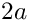. If we assume that the air-liquid interface is pinned at the edges of the slot, as shown in the sketch below, the problem has an obvious exact solution. The air-liquid interface must have constant mean curvature, so, assuming that its shape does not vary along the slot, the meniscus must be a circular cylinder. If we characterise the meniscus' shape by its vertical displacement along the centreline, 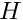, the (dimensional) curvature of the air-liquid interface is given by
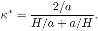
The plot of this function, shown in the right half of the figure below, may be interpreted as a "load-displacement diagram" as it shows the deflection of the meniscus as a function of the imposed non-dimensional pressure drop across the air-liquid interface, 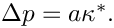

The plot shows that the load-displacement curve is not single-valued. Furthermore, the presence of a limit point at 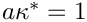 indicates that the maximum curvature of the meniscus is given by 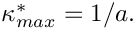 This implies that the maximum (dimensional) pressure that the meniscus can withstand is given by 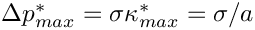.
The presence of the limit point makes it impossible to compute the entire solution curve by simply increasing in small increments. However, use of a displacement control approach, by prescribing while regarding (and thus 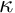) as an unknown, yields a single-valued function that can be computed by a straightforward continuation method in which is increased in small increments.
This approach was employed to compute the meniscus shapes shown in the plot below. The initial, zero-curvature configuration of the meniscus (corresponding to a vanishing pressure drop across the air-liquid interface) is the unit square. The meniscus is pinned along the lines 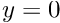 and  , and symmetry (natural) boundary conditions were applied along the lines and
, and symmetry (natural) boundary conditions were applied along the lines and  see Comments and Exercises for further details on the natural boundary conditions. As the pressure drop increases, the meniscus is deflected upwards until it reaches the configuration of maximum curvature when
see Comments and Exercises for further details on the natural boundary conditions. As the pressure drop increases, the meniscus is deflected upwards until it reaches the configuration of maximum curvature when  . Beyond this point, the pressure drop has to be reduced to compute the "bulging" meniscus shapes obtained for
. Beyond this point, the pressure drop has to be reduced to compute the "bulging" meniscus shapes obtained for
The comparison of the computed "load-displacement curve" against the exact solution, shown below, indicates that the two agree to within plotting accuracy.
Implementation
We shall now discuss the solution of the above problem with oomph-lib's Young Laplace elements.
The global namespace
As usual we define the problem parameters in a global namespace. The key parameter is the value of the prescribed control displacement which we initialise to zero. The function get_exact_kappa() returns the exact solution for the mean curvature of the meniscus. We will use this function for the validation of our results.
Next we define the orientation of the spines. Anticipating the shape of the meniscus, we set  so that corresponds to a flat meniscus in the -plane,
so that corresponds to a flat meniscus in the -plane,
and rotate the spines in the  direction by setting
direction by setting
where . With this choice, the spines are unit vectors that form an angle  (varying between and ) with the y-axis.
(varying between and ) with the y-axis.
The driver code
We start by preparing an output directory and open a trace file to record the control displacement, and the computed and exact values of the interface curvature .
Next we build the problem object and document the initial configuration: a flat meniscus.
Finally, we perform a parameter study by increasing the control displacement in small increments and re-computing the meniscus shapes and the associated interface curvatures.
The problem class
The problem class has the usual member functions. (Ignore the lines in actions_before_newton_solve() as they are irrelevant in the current context. They are discussed in one of the exercises in Comments and Exercises.) The problem's private member data include a pointer to the node at which the meniscus displacement is controlled by the displacement control element, and a pointer to the Data object whose one-and-only value contains the unknown interface curvature,
The problem constructor
We start by building the mesh, discretising the two-dimensional parameter space with 8x8 elements.
Next, we choose the central node in the mesh as the node whose displacement is imposed by the displacement control method.
We pass the pointer to that node and the pointer to the double that specifies the imposed displacement to the constructor of the displacement control element. The constructor automatically creates a Data object whose one-and-only value stores the unknown curvature, We store the pointer to this Data object in the private member data to facilitate its output.
The meniscus is pinned along mesh boundaries 0 and 2:
We complete the build of the Young Laplace elements by passing the pointer to the spine functions, and the prescribed curvature.
Finally, we add the displacement control element to the mesh and assign the equation numbers.
Postprocessing
We document the exact and computed meniscus curvatures in the trace file and output the meniscus shape.
Comments and Exercises
- Choice of spines:
We discussed earlier that the spine basis and the spines themselves must be chosen such that the mapping from to is one-to-one, at least for the meniscus shapes of interest. This requires some prior knowledge of the expected interface shapes.
The spine basis and the spines must be defined via function pointers that are passed to the Young Laplace elements. If the function pointers are not specified, the Young-Laplace elements revert to a cartesian formulation.
Experiment with different spine orientations and explore the interface shapes that are obtained if no spines are specified (by commenting out the lines in the constructor that pass the relevant function pointers to the Young Laplace elements).
- Natural boundary conditions:
As usual in any finite-element computation, we only enforced the essential boundary conditions by pinning the meniscus displacement along the "pinned contact lines" at and No constraints were applied along the two other domain boundaries (at and ), indicating that these boundaries are controlled by implied, "natural" boundary conditions. The variational principle (1) shows what these are: since we neglected the boundary integral on the right hand side of equation (1), the meniscus shape must satisfy implying that outer unit normal to the meniscus boundary, must be orthogonal to the direction of the spines. Since the spines do not have an
), indicating that these boundaries are controlled by implied, "natural" boundary conditions. The variational principle (1) shows what these are: since we neglected the boundary integral on the right hand side of equation (1), the meniscus shape must satisfy implying that outer unit normal to the meniscus boundary, must be orthogonal to the direction of the spines. Since the spines do not have an  - component, the meniscus must therefore have zero slope in that direction – just what we need for our problem.
- component, the meniscus must therefore have zero slope in that direction – just what we need for our problem.
To convince yourself that the this argument is correct, rotate the spines in the -direction, e.g. by changing their definition to
The natural boundary condition will still force the meniscus to be normal to the spines along the "free" contact line, resulting in interface shapes similar to the one shown in the figure below.This demonstrates yet again that the orientation of spines must reflect the relevant features of the problem. We refer to another tutorial for a more detailed discussion of the boundary condition and its relation to contact angles. Meniscus shape created by the natural boundary conditions when the spines (shown as vectors) are rotated in the x-direction.
Meniscus shape created by the natural boundary conditions when the spines (shown as vectors) are rotated in the x-direction.
- Displacement control:
Explore what happens if you disable displacement control and prescribe the pressure drop (i.e.) directly. The relevant code is already contained in the driver code. You'll have to comment out the lines in the problem constructor that create the displacement control element and the line that adds it to the problem's mesh. Replace them by the lines
// Comment out the previous two commands and uncomment the following two// to prescribe the pressure drop (the curvature) directly//Kappa_pt=new Data(1);//Kappa_pt->pin(0);
which create theDataobject that stores the prescribed curvature. (Note that the value of is already incremented in actions_before_newton_step(). With displacement control this step has no real effect as the Newton method will overwrite this assignment). Check what happens if the prescribed curvature exceeds the maximum possible curvature of the meniscus.
- Inefficient implementation:
Note that the current implementation of the Young Laplace elements
is inefficient as the elemental Jacobian matrices are computed by finite-differencing. You are invited to implement the analytical computation of the Jacobian matrix as an exercise.
- Other problems:
We provide a number of additional demo driver codes that demonstrate the solution of other, related problems.
- The code
demo_drivers/young_laplace/young_laplace.cc
and its adaptive counterpart
demo_drivers/young_laplace/refineable_young_laplace.cc
demonstrate the solution of three problems: (i) the barrel-shaped meniscus problem already discussed above; (ii) the deformation of a meniscus that is pinned at all four edges of a square tube; and (iii) the solution of a problem with contact-angle boundary conditions. The latter one is discussed in a separate tutorial.
- The spherical meniscus that emanates from a circular tube, shown in the animation at the beginning of current document, was computed with:
demo_drivers/young_laplace/spherical_cap_in_cylinder.cc
- The code
Source files for this tutorial
- The source files for this tutorial are located in the directory:
demo_drivers/young_laplace/
- The driver code is:
demo_drivers/young_laplace/barrel.cc
PDF file
A pdf version of this document is available.